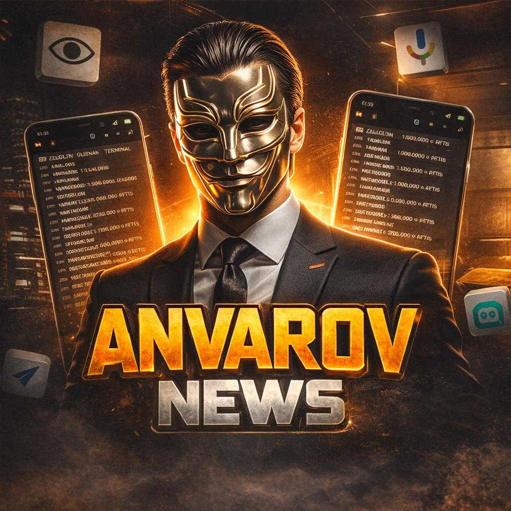

Обновления, изменения, важные объявления по боту.
ПерейтиБот помогает не терять важное: изменённые сообщения (бесплатно), а по подписке — удалённые и одноразовые медиа.
Это обязательный шаг. Без него бот не увидит бизнес-события.
Настройки → Telegram Business
Чат-боты → Добавить бота
Найди и подключи @AnvarovLogBot
Перейди в ЛС бота и нажми /menu.
/menu, чтобы увидеть статус.
Коротко и по делу.
Если собеседник изменил текст — бот пришлёт "Было / Стало". Бесплатно
По подписке бот показывает содержимое. Без подписки — покажет кто удалил и кнопку "Посмотреть". Подписка
Чтобы сохранить one-time фото/видео/ГС/кружок: сделай reply на это медиа и отправь любой текст. Подписка
Подписка открывает просмотр удалённых и одноразовых медиа.
/menu.На удалённые/одноразовые бот пришлёт: кто удалил/отправил и кнопку "Посмотреть", ведущую к оплате.
Бот показывает контент и присылает сохранённые файлы.
Ответы на частые вопросы.
Открой @AnvarovLogBot
→ нажми /menu → проверь "Моя подписка".
Создатель: @mkhmmm_1
Канал новостей: @AnvarovNews